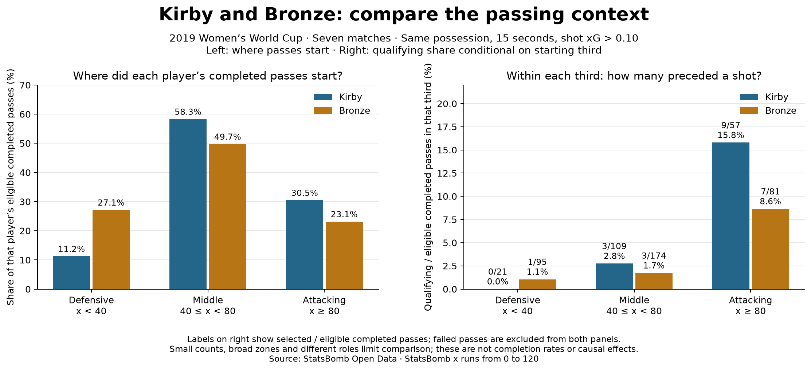

Football analyst training · Project lesson 20
Compare passes from the same part of the pitch.
An overall percentage combines many different situations. We now compare Kirby and Bronze within each starting third, then keep the remaining limitations visible.
1. Group the starting locations
On the StatsBomb x scale, the defensive third is 0 ≤ x < 40, the middle third is 40 ≤ x < 80, and the attacking third is 80 ≤ x ≤ 120. We use the pass start, not its destination.
2. Keep numerator and denominator in the same area
within_zone_share = qualifying_passes_from_zone / completed_passes_from_zone * 100We keep the existing eligibility rules: completed possession-team passes, listed restarts excluded. Qualifying passes occur within 15 seconds before a same-possession shot with xG > 0.10. The denominator contains all eligible completed passes starting in that zone, including those not followed by a qualifying shot.

3. Read the two panels differently
The left panel asks where did her completed passes start? Kirby's 30.5% means 57 of her 187 eligible completed passes began in the attacking third. The right panel asks of those attacking-third passes, how many qualified? Her 15.8% means 9 of those 57. These numbers have different denominators.
4. Follow the code in Spyder
- Open 20_pass_location_context.py and run it. The cached events from lesson 13 are required.
starting_third(x)assigns each pass to one zone. Exactly 80 goes into the attacking third.summarize(...)groups by both player and starting third, counts all eligible passes and the selected subset, then divides the two counts.- If no eligible passes exist in a cell, the share is
None. An undefined share must not be presented as a measured 0%.
5. Your practical analyst task
Use the saved evidence to write a two-sentence comparison of Parris and Walsh in the attacking third. Include each numerator and denominator, then one reason you cannot conclude who is the better passer. No new download or percentage quiz is needed.
Where to find the evidence and check your approach
In data/20_pass_location_evidence.json, find each player's entry under players, then the Attacking third entry under zones. Parris has 7 qualifying passes among 75 eligible completed passes; Walsh has 2 among 21. Compare the shares alongside their very different counts. Broad location groups do not control pressure, pass difficulty, role or receiver; small numerators limit interpretation.
Ask your teacher to review your two sentences or explain any function. Running assistant-prepared code is a useful step; explaining and extending it independently is a separate milestone.
Previous: time-window sensitivity · Denominator reference · Research report